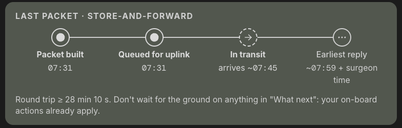

Distance from Earth · surgeon packet

28 min
round trip to the flight surgeon in our Mars-transit demo, before anyone reads it
Everything is saved on the tablet and sent when a link exists.
The latest readings and a crew note go to the flight surgeon as one packet.
Self-care → CMO → private medical conference → urgent ground.
Crew Health Companion